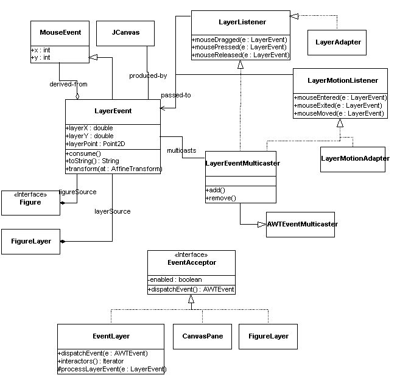

The event package
The key classes in the event package are shown here:

The central class is LayerEvent, which is produced by JCanvas in the
(protected) methods processMouseEvent() and processMouseMotionEvent().
These methods accept a MouseEvent, and produce a LayerEvent, which
they then pass to the dispatchEvent() method of the top-level canvas pane.
From then on, all event processing in the Diva canvas uses LayerEvents
instead of MouseEvents.
The LayerEvent class and the associated listener interfaces
(LayerListener and LayerMotionListener) differ from the AWT MouseEvent
class in two key ways:
- The coordinates are stored in floating-point form as well as
integers. The integer values maintained by the MouseEvent superclass
are the original screen coordinates of the mouse event, while the
floating-point coordinates accessible through the methods getLayerX(),
getLayerY(), and getLayerPoint(), are coordinates transformed into the
current coordinate system.
- The division of event types is different. The AWT
MouseMotionListener, has the methods mouseMoved() and mouseDragged(),
whereas the LayerMotionListener has mouseEntered(), mouseExited(), and
mouseMoved(). We made this separation since: a) in typical interactive
graphics applications, the three events mousePressed(),
mouseDragged(), and mouseReleased() generally occur together and b)
the entered, exited and moved events are much more expensive to process
than the other events, so we figured that there would be less
overhead this way.
Accompanying the event and listener class and interfaces are the usual
hangers-on: a multi-caster for use by classes that maintain a set
of listeners, and adapter classes that provide null implementations
of the listener interfaces.
[FIXME: add explanation of EventLayer and EventAcceptor.]